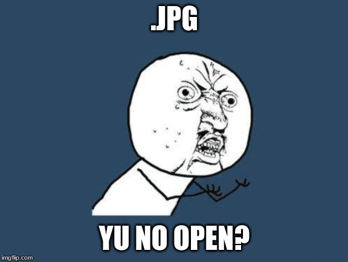

<!DOCTYPE html>
<html>
<head>
    <link rel="stylesheet" href="style.css">
</head>
<body>
    <h1 id="overskrift"></h1>
    <p id="bTekst"></p>
<script>
    document.getElementById("overskrift").innerHTML = "Javascript";
    document.getElementById("bTekst").innerHTML = "JavaScript er et populært programmeringssprog, der bruges til at tilføje interaktivitet til websteder og webapplikationer. Det blev først udviklet af Netscape i 1995 og har siden da vundet enorm popularitet og udbredelse. JavaScript giver udviklere mulighed for at manipulere HTML og CSS, håndtere brugerinteraktion og sende forespørgsler til servere for at hente data uden at skulle genindlæse hele websiden. JavaScript kan køres i de fleste moderne webbrowsere, hvilket gør det til et alsidigt værktøj til udvikling af dynamiske og responsive brugergrænseflader. Det er også afgørende for mange populære biblioteker og rammer som React, Angular og Vue.js, der forenkler udviklingen af avancerede webapplikationer. Med JavaScript kan udviklere oprette alt fra enkle funktioner til komplekse applikationer, og sproget fortsætter med at udvikle sig med nye funktioner og muligheder. Det er en afgørende færdighed for webudviklere og spiller en central rolle i den moderne webudviklingsverden."
    document.write('
</body>
</html>